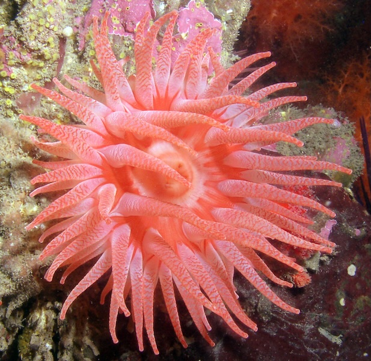
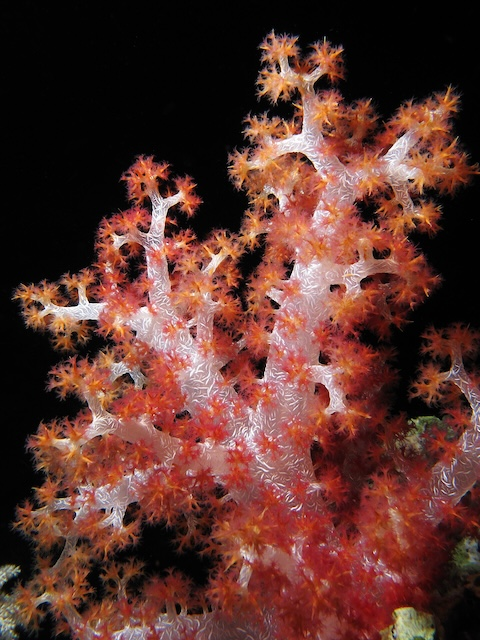
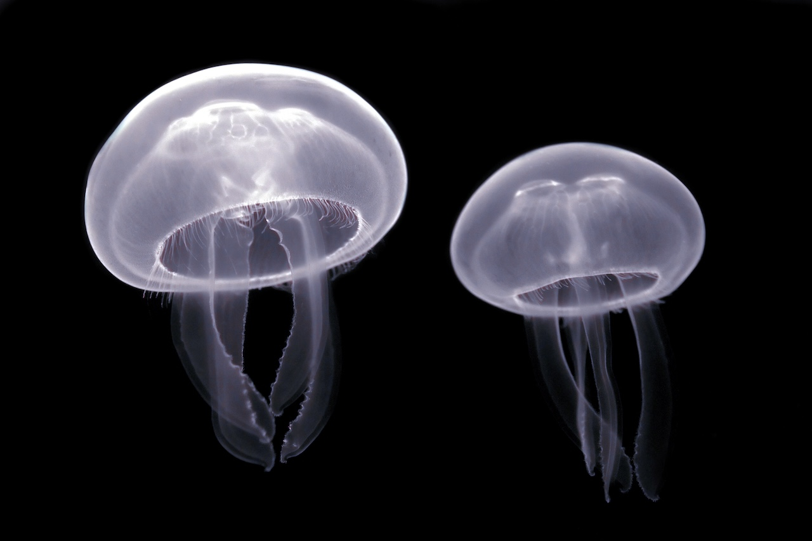
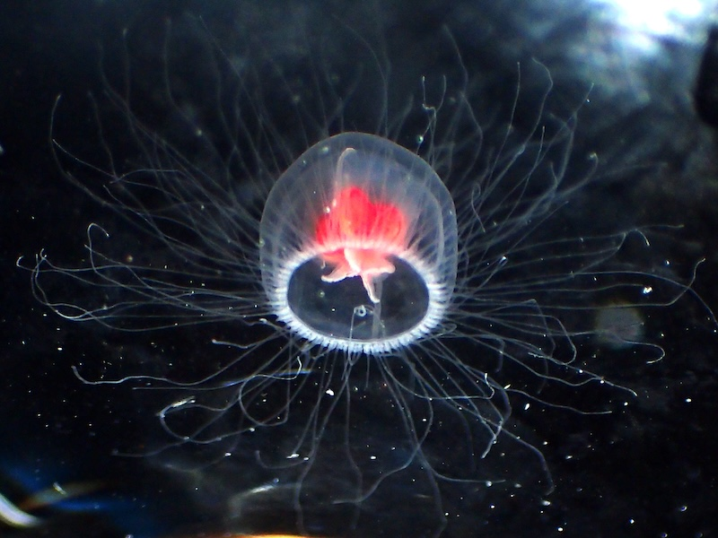

Fascinerande fakta om maneter!
Har du en släkting som du tycker börjar bli grå och gammal? Egentligen är din släkting ganska ung. Människan är väldigt ung om man jämför med maneten. Maneten har guppat runt i jordens hav i över 500 miljoner år, säger forskarna. De fanns långt innan människan upptäckte eld och innan dinosaurier vandrade runt på jorden. Maneterna är verkligen mästare på överlevnad, och har fler fascinerande egenskaper än man kan tro.
Maneter är marina nässeldjur med en enkel kropp uppbyggd av en geléartad massa som till stor del består av vatten. De är alltså inte fiskar. Maneter är släkt med koraller och havsanemoner.

Bild: Kirt L. Onthank, CC BY-SA 3.0 · Källa

Alexander Vasenin, CC BY-SA 3.0, via Wikimedia Commons.

Tentakler med brännande superkrafter
Har du någon gång bränt dig på en manet? Då har du förmodligen kommit i kontakt med dess nässelceller. Längs manetens kropp sitter tentakler, alltså långa trådar som hänger ner i vattnet. På dem finns miljontals små nässelceller. När ett litet djur kommer för nära kan cellerna skjuta ut en liten giftig tråd som hjälper maneten att fånga sitt byte. På så sätt kan maneten fånga små kräftdjur, plankton och ibland små fiskar. Nässelcellerna fungerar också som ett försvar mot fiender.
En kropp utan hjärna
Tänk dig att försöka leva utan hjärna! Det låter omöjligt, eller hur? Men maneten klarar det. Den har inget huvud och ingen hjärna som styr kroppen. I stället har den ett enkelt nätverk av nervceller som hjälper den att känna av omgivningen och reagera på sådant som händer runt omkring den. Maneten kan bland annat känna av ljus, rörelser och beröring. Den behöver alltså ingen hjärna för att kunna simma, fånga mat och undvika faror.
Blåljus i mörkret
Kan maneter lysa i mörkret? Ja, vissa maneter kan faktiskt lysa! Fenomenet kallas bioluminiscens. Det innebär att ett djur kan skapa sitt eget ljus genom en kemisk reaktion i kroppen. När en lysande manet simmar genom ett mörkt hav kan den se ut som en liten levande lampa. Varför lyser den? Det kan bland annat hjälpa den att skrämma bort fiender eller förvirra djur som vill äta upp den.

Foto: Luc Viatour, CC BY-SA 3.0, via Wikimedia Commons.
Kan maneter leva för evigt?
Tänk om du kunde backa tiden och bli barn igen varje gång du blev gammal. Det är ungefär vad den lilla maneten Turritopsis dohrnii kan göra! När den vuxna maneten blir stressad, skadad eller får ont om mat kan den krympa ihop och förvandlas tillbaka till ett tidigare stadium i livet. Då blir den ungefär som en liten larvliknande boll av celler som så småningom kan utvecklas till en ny manet.
Det betyder att den kan börja om sin livscykel och göra det flera gånger om! Men är den verkligen odödlig? Inte riktigt. Den kan fortfarande bli uppäten av andra djur, drabbas av sjukdomar eller dö av andra faror i havet. Men om den slipper undan alla faror skulle den i teorin kunna fortsätta att börja om sitt liv.
Text: Saga Lindholm

Illustration: Saga Lindholm.

Foto: Tony Wills, CC BY-SA 4.0, via Wikimedia Commons.